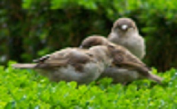

Questions
2026
En dehors d'un narratif répété sans cesse,
ne pourrait-on se poser des questions comme celles-ci ?
| ◦ Que sont | ||
| les 5 (cinq) couches de l'atmosphère ? | ||
| ◦ Les causes du réchauffement climatique | ||
| ne se trouveraint-elles pas également dans les pollutions de la mésosphère dite ignorosphère ? | ||
| ◦ Les pollutions | ||
| générée par les constellations de satellites et de leurs débris qui tournent autour de la Terre n'aurait-elle pas des répercussions sur la qualité de l'air et sur l'environnement, en perturbant les écosystèmes et les horloges biologiques des êtres vivants qui disparaissent ou qui deviennent chaque jour plus fous et pyromanes s'ils sont humains, répandant leurs pollutions, fruits de leur chimie (métaux lourds, plastiques, pesticides...), de leur physique (pollution lumineuse, retombées radioactives), de leurs bruits (pollution sonore) au-delà même de la Planète sur laquelle ils vivent et qu'ils avaient baptisée Planète bleue en 1972 ? | ||
| ◦ Que savons-nous vraiment | ||
| de la thermodynamique ? | ||
| ◦ Pourquoi ne protège-t-on pas les pollinisateurs ? | ||
{kind=link}
Les insectes pollinisateurs, essentiels à la biodiversité, la reproduction des plantes et la production agricole, sont en déclin... comme l'étaient en 2025 les producteurs de fleurs et comme vont l'être sans doute d'ici peu les fleuristes contraints de manipuler des fleurs importées gorgées de pesticides et toute leur filière professionnelle : importateurs de fleurs, grossistes, etc., sans oublier leurs clients car la liste des pesticides potentiellement incriminés est longue et connue des autorités sanitaires qui citent tant les pesticides dont l'usage est autorisé en Europe (Flonocamide, Dithiocarbamates et Glyphosate, etc.) que ceux qui sont interdits (Iprodione, Acéphate, Dodémorph, Ethirimol, Méthamidophos, Clofentézine, Thiacloprid, etc.).
La France doit privilégier la protection des pollinisateurs plutôt que celle des pesticides titrait, dans son Volume 392 n° 6796, p. 366, la revue Science du 23 avril 2026.
Où sont passés les pollinisateurs des marronniers parisiens ?
 Vous connaissez vraiment les ABEILLES ?
Vous connaissez vraiment les ABEILLES ?
Ces pollinisateurs ont-ils disparu parce qu'il y aurait trop de ruches à Paris ? disparu comme les piafs et les descendants de ceux qui avaient ainsi nommé les moineaux ?
{kind=link}

Passer domesticus (Linnaeus, 1758), moineaux
Paris Ier, Jardins des Tuileries, 16-07-2010
 Moineau: l'oiseau le plus utile de la Terre
Moineau: l'oiseau le plus utile de la Terre
Mais les moineaux domestiques, Passer domesticus, sont mal aimés des jardiniers comme les moineaux friquets, Passer montanus, le sont des agriculteurs, alors qu'ils présentent l'intérêt de se nourrir de nombreux insectes considérés comme "ravageurs" ou de graines de plantes sauvages souvent qualifiées de "mauvaises herbes".
Est-ce parce que Passer domesticus (Linnaeus, 1758) est inscrit, parmi les animaux vertébrés, sur la Liste des espèces modèle (sic) pour la recherche qu'il a disparu de la Région parisienne ?
Quantifier les insectes avec Bugs Matter ne permettra sans doute pas d'arrêter leur déclin et ne permettra pas plus au MNHN de payer ses factures en retard et de mettre fin à son délabrement ! Où sont passés les hommes éclairés, puis les gestionnaires et les informaticiens compétents du MNHN ? Au PIAF ?
-------